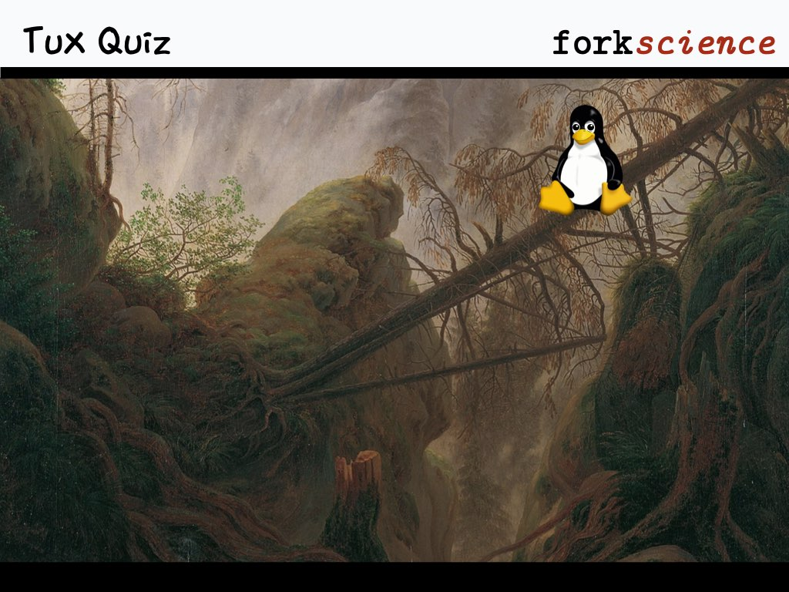

Note:
Clicking the picture brings it back to the quiz question.
Quizzes
1
Intro
2
Processes
3
Scheduling & System Calls
4
File Systems
5
I/O
6
Memory
7
Recap of Terminology
8
Memory Paging
Options
R
return to question
S
go to start page
Images in this work are derived from
various sources
and are licensed under
CC BY-SA 4.0
.